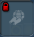
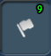

高い耐久力、攻撃力を持つが、移動速度は宇宙船に劣る。
対宇宙海賊はもちろんのこと、対グロックスでもかなりの威力を発揮する。
目次 > ゲームについて > シミュレーション攻略 > SPORE > コレクション一覧 > 宇宙ステージ
| 概要 | 情報 | ステージ攻略 |
| コレクション一覧 | 継承アビリティー一覧 | アチーブメント一覧 |
| SPORE 攻略へ | 目次へ戻る |
| [ 細胞ステージ ] [ クリーチャーステージ ] [ 集落ステージ ] [ 文明ステージ ] [ 宇宙ステージ ] |
| [ 1 ] [ 2 ] [ 3 ] [ 4 ] [ 5 ] [ 6 ] |
| 宇宙船のツール(メインツール) |
| 名前 | 画像 | 値段 | 入手条件 | 効果 |
| スキャン | 初期装備 | 動物や植物、建物などに光線を当てると、その詳細を知ることができる | ||
| レーダー | 初期装備 | ウィルスに感染したクリーチャーの居場所、アーティファクトの場所などを教えてくれます | ||
| ホログラム偵察 | ミッショニスタ5、もしくは貿易商5 | 精密調査のためにホログラムを惑星に送る | ||
| 惑星スキャン |  | 動物学者5、エコの英雄5 | 惑星上の全ての植物とクリーチャーを調べることができる | |
| 帰りの切符 | シャーマンとしてプレー | 母星へ戻る | ||
| ? | ||||
| 名前 | 画像 | 値段 | 入手条件 | 効果 |
| 宇宙船のツール(コロニー) |
| 名前 | 画像 | 値段 | 入手条件 | 効果 |
| コロニースーパーパック |  | (条件なし) | コロニーを設置できる(消耗品) | |
| バイオ・プロテクター | 動物学者2、もしくはエコの英雄3 | エコ災害の被害を少なくする(消耗品) | ||
| バイオ・スタビライザー | 動物学者3、もしくはエコの英雄4 | エコ災害が発生する確率を下げる(消耗品) | ||
| 忠誠心ブラスター | 主戦論者2、もしくはボディーガード3 | その惑星にいる住民の忠誠心を最大のまま保持する(消耗品) | ||
| 満足度ブースター | 黄金の手3、もしくは商人3 | その惑星にいる住人を幸せにする(消耗品) | ||
| スパイス貯蔵庫 | 貿易商2、もしくは開拓者3 | その惑星で生産できるスパイス最大値を増やす(消耗品) | ||
| 超迎撃砲塔 | |
主戦論者3、もしくは開拓者4 | 敵対する宇宙船を迎撃する防衛装置(消耗品)。 高い耐久力、攻撃力を持つが、移動速度は宇宙船に劣る。 対宇宙海賊はもちろんのこと、対グロックスでもかなりの威力を発揮する。 |
|
| 名前 | 画像 | 値段 | 入手条件 | 効果 |
| [ 1 ] [ 2 ] [ 3 ] [ 4 ] [ 5 ] [ 6 ] |
| [ 細胞ステージ ] [ クリーチャーステージ ] [ 集落ステージ ] [ 文明ステージ ] [ 宇宙ステージ ] |
| 概要 | 情報 | ステージ攻略 |
| コレクション一覧 | 継承アビリティー一覧 | アチーブメント一覧 |
| ページの上部へ | SPORE 攻略へ | 目次へ戻る |